Research / A closer look
Water connects
everything.
From the smallest differences in wetland elevation to entire river networks, I study how water shapes ecosystems—and how ecosystems shape water.
All figures and results here are my own work, conducted in R in close collaboration with colleagues and mentors.
River Ecology
Over the 21st century, many rivers transformed from relatively low nutrient, low algal conditions to high nutrient, high algal conditions. Observing the negative effects of excess algae to our everyday activities, not to mention to river and ocean ecosystem health, many countries, states, and cities developed management plans to reduce nutrient loads to rivers. It can take a long time for these management plans to come to fruition, but there is recent indications that a shift is taking place.
We studied such a shift in the Loire River. The Loire River is the longest river in France and is often referred to as one of the last “wild” rivers of Europe due to its relatively unobstructed path from mountains to sea.
Through several lines of evidence, we show that the Loire River underwent a large and rapid shift from “eutrophic” conditions back to “oligotrophic” conditions in the early 2000’s. This has promising implications for how quickly freshwater ecosystems can respond to water quality and landscape management changes. Moreover, it provides a fascinating case study for understanding ecological processes in large rivers in the context of global change.
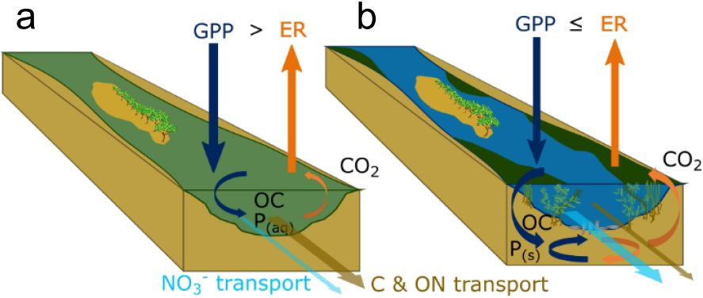
You can read about it here.
This work is ongoing and we are continuing to investigate the causes and consequences of this ecosystem shift, particularly with respect to how carbon is processed and emitted to the atmosphere.
Co-authors:
Florentina Moatar
Gilles
Pinay
Matthew Cohen
Anthony
Maire
Enrico
Bertuzzo
Funding provided by the Water Agency of Loire Catchment AELB, Université de Tours, and EUR H2O’Lyon.
Ecohydrology
Ecohydrology explores the interconnectedness of biota and the hydrologic cycle through local and global feedbacks. This idea is so intriguing to me!
Plant-water Interactions and Disturbance
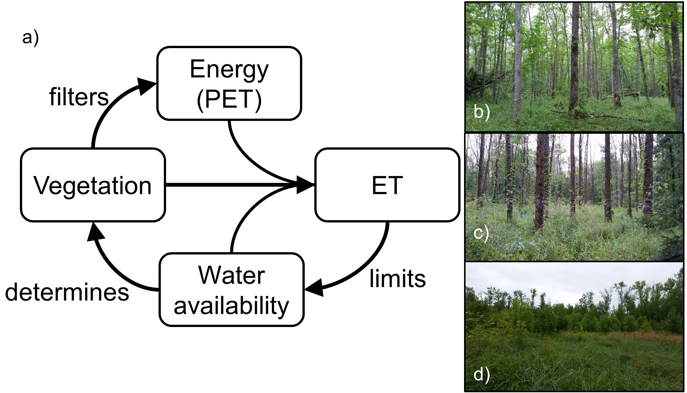
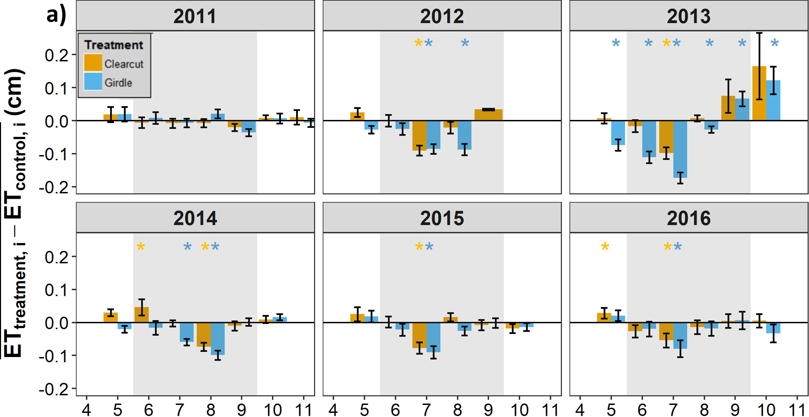
The invasive pest, the emerald ash borer, is causing large-scale loss of ash trees in North America, with important consequences for forestry, aesthetics, and ecosystem functioning. For the first chapter of my dissertation, I analyzed the ecohydrologic impacts of forest loss for the unique and beautiful black ash wetlands. We found three main things:
- evapotranspiration (ET) limits the amount of water in black ash wetlands, and
- ET is uniquely determined by vegetation type and physical structure,
but more interestingly,
- when black ash is lost, a wetter and more marsh-like ecosystem persists, with implications for an alternative stable state.
You can read about it here.
Co-authors:
Daniel
McLaughlin
Rob Slesak
Anthony D’Amato
Brian Palik
Project funded by the Minnesota Environmental and Natural Resources Trust Fund, the USDA Forest Service Northern Research Station, and the Minnesota Forest Resources Council. Additional funding was provided by the Virginia Tech Forest Resources and Environmental Conservation department, the Virginia Tech Institute for Critical Technology and Applied Science, and the Virginia Tech William J. Dann Fellowship.
Wetland Microtopography
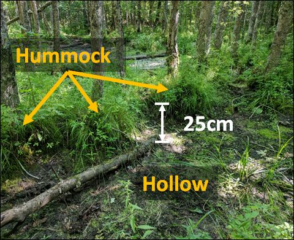
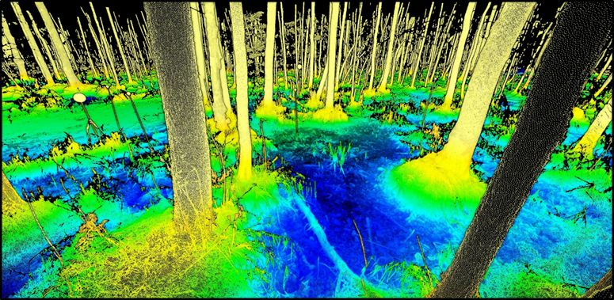
Decades of research suggest that microtopography—changes in ground elevation on the order of 10–100 cm—is an important feature of ecosystems, and particularly wetlands, around the world. For example, we know that high points in a wetland (“hummocks”) have greater plant diversity, primary production, and nutrient concentrations than nearby low points (“hollows”). We also know that, under the right circumstances, spatial patterns of microtopography can emerge—a result of feedbacks that develop between biota, soil carbon, and hydrology. These observations, while interesting in their own right, also have important consequences for how we scale from point measurements to ecosystem and global estimates.
I explored black ash wetland microtopography in detail as part of my dissertation work, and with the help of my collaborator, Dr. Atticus Stovall, we used a novel LiDAR method called Terrestrial Laser Scanning (TLS) to analyze the microtopographic pattern, structure, and ecological implications. In particular we:
- published the algorithm to extract microtopography from TLS data. You can read about it here.
- analyzed the geospatial structure of microtopography and found that it supports a model where plants create their own microtopography. You can read about it here.
- related this structure to measured biogeochemical variables
Finally, with the help of many other collaborators, we published the first synthesis of wetland microtopography: what it is, why it’s ecologically important, and how it comes to be!
Co-authors:
Atticus
Stovall
Daniel
McLaughlin
Rob Slesak
Biogeochemistry
Headwater stream biogeochemistry
Headwater streams are the capillaries of river networks, comprising the majority (e.g., 70-85%) of the total stream length. Despite their small individual sizes, headwaters collectively contribute the majority of annual flow and nitrogen export to river networks. Importantly, headwaters also have a high sensitivity to disturbance, meaning that small changes to their upstream area have large effects on their hydrology and health of their biota.
Under a changing climate, many headwater streams are becoming increasingly dry and warm. Given these changes, humans living in headwater environments are planning on either groundwater resources or increasing surface water storage (i.e., dams) for additional freshwater. Frustratingly, both of these solutions will likely exacerbate drying and warming of headwater streams. In this context, we sought to understand how headwater streams are responding to these changing drivers.

In particular, we were interested in how drying and warming may affect the instances of stream hypoxia (dissolved oxygen at levels low enough to impair organisms). Hypoxia is a useful and easy to measure environmental indicator of ecosystem health, and is of practical interest to fishermen, swimmers, and casual stream passers-by alike.
Across 78 sites over 2 years, we observed that drying, rewetting after drying, and storm events were strong predictors of hypoxia – each with characteristic patterns (timing, magnitude, and duration) of hypoxia. We further found that warmer, low-slope streams were the most susceptible to hypoxia events.
You can read about it here.
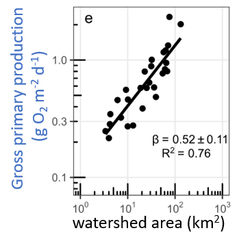
Using the same dissolved oxygen data, we were able to also calculate the rates of gross primary production and ecosystem respiration of headwater streams across 5 different river networks. We observed that gross primary production increases predictably from the smallest to the largest streams, whereas ecosystem respiration was far more variable. We also observed that dissolved oxygen was a good predictor of dissolved organic carbon quality and denitrification potential.
You can read about it here.
As part of the same suite of studies, we also were able to investigate the synchrony of stream dissolved oxygen signals within and across river networks.
You can read about it here.
Co-authors:
Susana
Bernal
David
Lewis
Florentina Moatar
Gilles
Pinay
Matthew Cohen
Jay Zarnetske
Anna Lupon
Amine
Boukra
Matthieu
Masson
Funding provided by the Loire-Bretagne Water Agency and the Rhone-Mediteranee-Corse Water Agency.
Wetland biogeochemistry
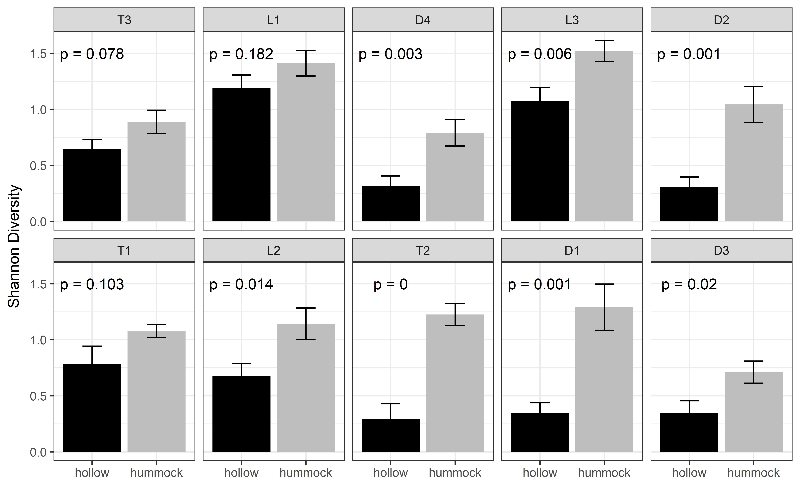
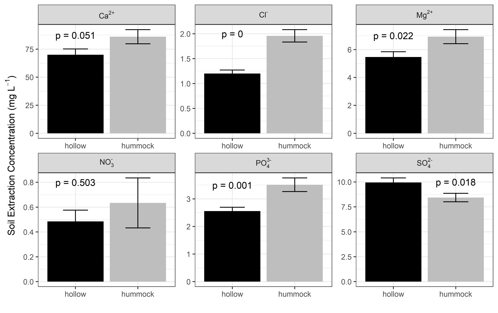
In wetland systems like the black ash swamps that we study, the ground surface is covered by an organic layer of peat or muck. The height (or depth) of this layer is a function of the balance between primary production and soil respiration. We commonly observe local high points (“hummocks”) of this organic layer that are occupied by black ash trees, which led us to a hypothesis:
H: black ash trees “create” their own hummocks through an evapoconcentration positive feedback loop, like so:
- black ash tree transpiration draws in dissolved nutrients from the surrounding area, which leads to
- greater local primary production, which leads to
- buildup of root mass/soil organic matter and also greater transpiration, which leads to
- nutrient accumulation, and so on.
As part of my dissertation work, I tested this hypothesis by investigating microtopography and wetland biogeochemical variables such as nutrients, vegetative diversity, and primary production. We found evidence supporting the evapoconcentration feedback loop where hummocks were hotspots for soil phosphorus (and the passive evapotranspiration tracer, chloride!), understory diversity, and overstory biomass.
Are plants actively changing their environment to their own advantage? (Could be!) This is a very difficult question to answer, but this research may add another piece of evidence to our growing understanding of the agency of plants.
You can read about it here.
Using principles from landscape
ecology, we also used spatial analysis of microtopographic features
to evaluate evidence of positive plant-water-soil feedbacks
(“autogenesis”), which you can read about here.
For a more complete discussion on wetland microtopography in general,
you can read our synthesis here.
Co-authors:
Daniel
McLaughlin
Rob Slesak
Atticus Stovall
Hydrology
Watershed Hydrochemistry
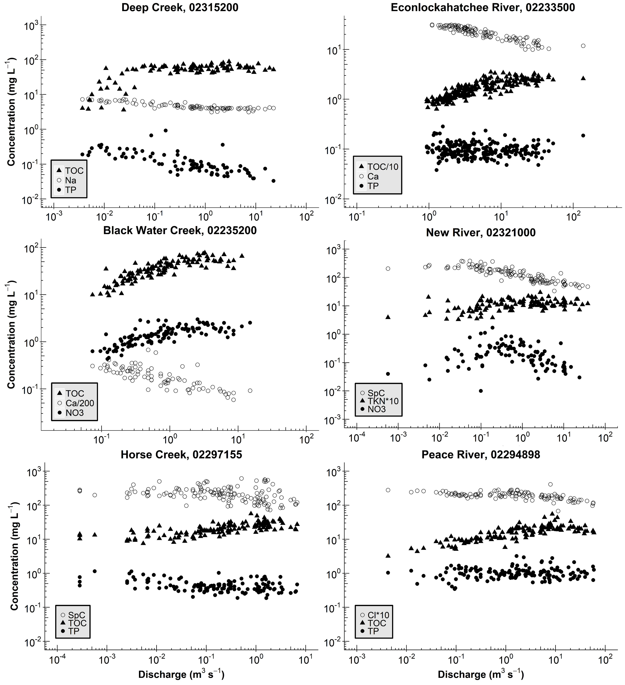
Since the early days of watershed science, researchers have been fascinated with the concentration-discharge (C-Q) relationships of rivers and streams. The idea is simple enough: how does the chemical concentration of a material (e.g., nitrogen or sediment) change with the amount of water flowing in the river (aka “discharge”)? Perhaps surprisingly, these C-Q relationships can tell us quite a bit about how, when, and where water is routed through, and stored by watersheds.
For my master’s thesis, I analyzed long-term measurements of concentration and discharge for rivers and streams across Florida. I found consistent patterns in C-Q relationships, where the C-Q shape depended entirely on the type of material under consideration (e.g., organically-derived versus rock-derived), implying common hydrologic storage and transport across systems, regardless of size or location. Interestingly, I also found consistent “breaks” in many of the C-Q relationships, implying a watershed switching behavior in the source location for river water (e.g., deep aquifer storage versus shallow soil horizons). This information improves our understanding of the fate and transport of materials through watersheds, with implications for predicting loads to downstream waterbodies.
You can read about it here.
Co-authors:
Matt Cohen
Project funded by the National Council for Air and Stream Improvement, the Florida Forest Service, and the National Institute of Food and Agriculture (NIFA) via CRIS project FLA‐FOR‐ 005284.
Wetlandscape Connectivity
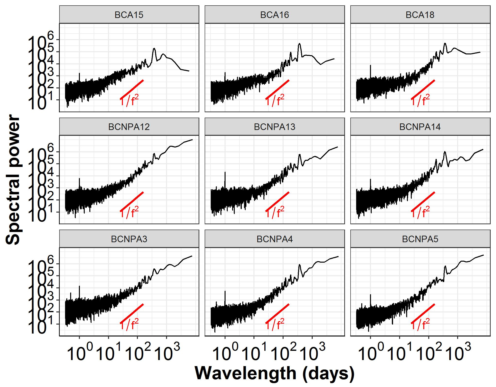
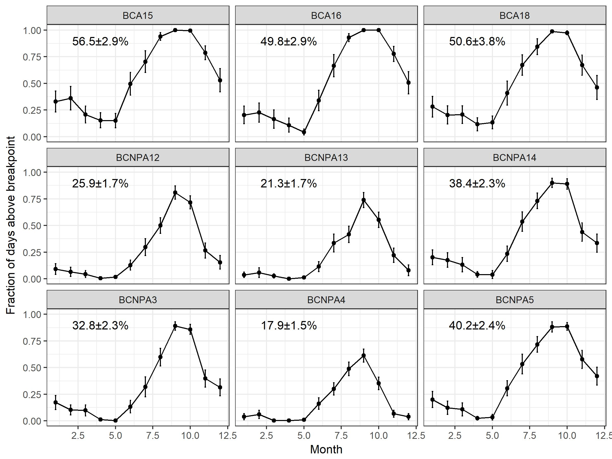
A wetlandscape is a complex of all the wetlands within a drainage network. Most of the time, wetlands in a wetlandscape are disconnected from each other—they are geographically isolated. However, the timing, magnitude, and frequency of connections among wetlands in a wetlandscape has important implications for policy and regulations, ecosystem functioning, and also ecosystem services.
We used high-frequency measurements of wetland stage (i.e., water-level) in geographically-isolated cypress domes in Big Cypress National Preserve in southwest Florida to develop a simple methodology for extracting:
- elevation thresholds of wetlandscape connectivity,
- frequencies and timings of wetlandscape connectivity (i.e., when and how often are the wetlands connected to each other), and
- magnitudes of hydrologic exchange among wetlands
You can read about it here
Co-authors:
Daniel
McLaughlin
Matt Cohen
Carlos
Quintero
Jim Heffernan